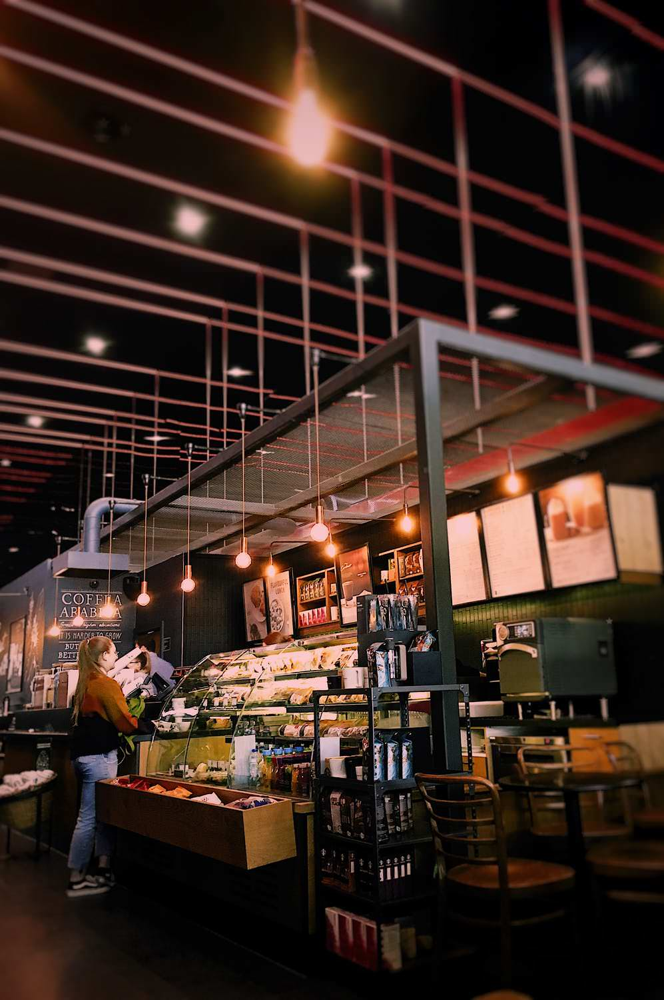

A história da Panificadora Pingo Doce teve seu início em 1993 na cidade de Curitiba, quando os fundadores arrendaram seu primeiro empreendimento, na época conhecida como Padaria Carmo.
Cinco anos mais tarde, em 1998, os negócios já prosperavam e por isso foi adquirido outro ponto. O da Padaria Gilpão, próximo ao centro da cidade.
Em 1978 o país passava por um período conturbado, que exigiu muita criatividade, visão e determinação. Apesar de todas as dificuldades enfrentadas, no dia 08 de maio do ano seguinte, em 1979, a família adquiriu um imóvel no centro da cidade onde centralizou suas atividades. Nascia assim a Panificadora São Francisco.
Daí para frente, a história encarregou-se de criar uma tradição que perdura até hoje, construída com muito empenho e a dedicação.
No ano 2000, a Panificadora São Francisco passou pela primeira grande expansão na sua área física. Nessa época, já era a mais tradicional do município e passou a contar com área total de 500m².

Em meados dos anos 2000 a Panificadora Pingo Doce acompanhando o avanço do ramo de panificação, passou por uma nova mudança. Desta vez a reestruturação se deu no novo layout, na linha de produção e na parte de vendas, mudanças que transformaram o conceito de vender pão, aliando qualidade, tradição e um excelente atendimento ao público.
As mudanças deram resultados tão bons, que a ideia de expansão foi uma consequência natural. No dia 17 de junho de 2000, entrava em atividades a primeira filial da Panificadora Pingo Doce, localizada na Rua Babitonga, no Centro Histórico da Cidade e inicialmente conhecida como Binot Pães e Doces.
Em meados de 2004 a Panificadora São Francisco inicia um novo processo de evolução que envolveu mudanças maquinário da produção, visando mais agilidade na produção e um substancial aumento na qualidade de seus produtos.
No ano de 2005, a Panificadora São Francisco conquistou o certificado de qualificação OURO do PROPAN (Programa de Apoio à Panificação) e o Atestado do PAS (Programa Alimentos Seguros) pelo SENAI, que confirma a implementação dos requisitos das Boas Práticas de Fabricação em sua unidade. Tal implantação foi realizada sob a Coordenação do próprio SENAI obedecendo a metodologia do PAS, que contempla as disposições legais vigentes.
A Panificadora Pingo Doce atende hoje, somadas as suas duas unidades, mais de 1.200 clientes por dia, e conta com mais de cinquenta funcionários. São duas décadas de tradição que consolidaram uma empresa forte, e que se destaca cada vez mais por sua variedade, atendimento impecável e qualidade em todos os seus deliciosos produtos.